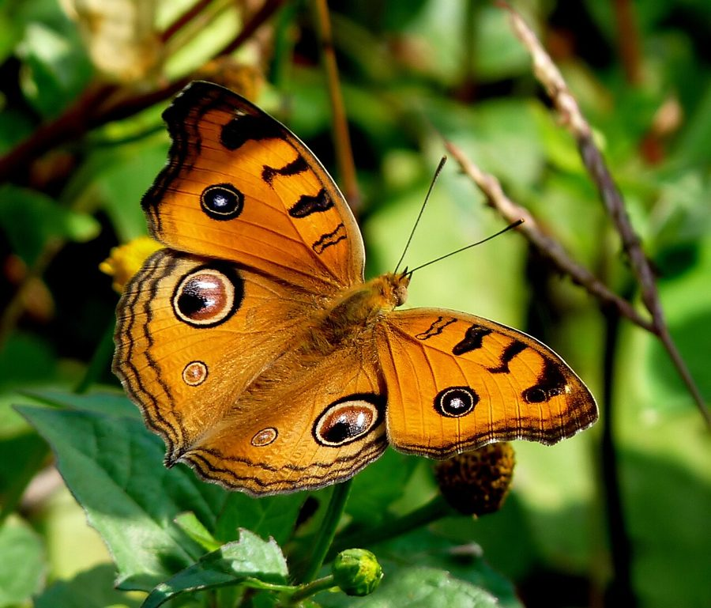

मयूर पंख तितलीPeacock Pansy
Junonia almana · Nymphalidae · INS-0023

- Scientific name
- Junonia almana (Linnaeus, 1758)
- Family
- Nymphalidae
- Hindi
- मयूर पंख तितली
- Status here
- native
- IUCN
- not evaluated
When to look कब देखें
Present all year.
मयूर पंख तितली / Peacock Pansy
Junonia almana (Linnaeus, 1758) — Nymphalidae
मयूर पंख तितली (पीकॉक पैंसी) — पूर्वी उत्तर प्रदेश के घास के मैदानों, बागों और खेतों के किनारे पाई जाने वाली एक अत्यंत सुंदर और चमकीली मध्यम आकार की निवासी तितली है। इसके पंखों का ऊपरी हिस्सा चमकीले नारंगी-भूर (bright orange-brown) रंग का होता है, जिस पर मोर के पंख जैसे गोल रंगीन धब्बे (peacock-like eyespots) बने होते हैं, जिसके कारण इसे यह नाम मिला है। इन धब्बों के केंद्र में नीले और सफेद रंग की बिंदुएं होती हैं जो शिकारियों को डराने का काम करती हैं। इस प्रजाति में मौसम के अनुसार पंखों के आकार में अंतर आता है (phenotypic plasticity); बारिश के मौसम में पंखों के नीचे की तरफ धब्बे साफ होते हैं, जबकि सर्दियों में पंख सूखे पत्ते जैसे दिखते हैं। इसके कैटरपिलर घास और खरपतवारों पर पलते हैं।
Quick Identification त्वरित पहचान
| Feature | Description |
|---|---|
| Size | Medium-sized butterfly; wingspan 45–60 mm |
| Colouration | Bright orange-brown upperwings with dark wavy margin lines |
| Forewing Eyespot | A large, distinct eyespot on the post-discal area with a black center and blue highlights |
| Hindwing Eyespot | A very large, prominent eyespot near the upper margin, containing a double blue pupil |
| Underside (Wet) | Pale yellow-brown with prominent eyespots and wavy dark lines |
| Underside (Dry) | Dull grey-brown, leaf-like texture with eyespots reduced to tiny dots |
Field tip: Look in damp grassy fields. Identified by its bright orange wings with two very large, blue-centered peacock eyespots on each side. If it closes its wings during winter, it completely camouflages as a dry brown leaf.
Morphology आकारिकी
Biometrics (typical measurements for adult specimens in the Gangetic plains):
| Measurement | Range |
|---|---|
| Forewing length | 20–30 mm |
| Wingspan | 45–60 mm |
Seasonal Dimorphism (Phenotypic Plasticity):
- Wet-Season Form (WSF): The outer margins of the wings are relatively smooth. The underside is yellowish-brown with well-defined, prominent eyespots and clear wavy lines.
- Dry-Season Form (DSF): The outer margins of the forewings are deeply falcate (hooked), and the hindwings have a short tail-like extension. The underside is dull brownish-grey, mimicking a dry leaf with a midrib-like line running across, and the eyespots are reduced to tiny, obscure dots.
Behaviour & Ecology व्यवहार और पारिस्थितिकी
Active sun-lover and territorial percher.
- Basking behaviour: Frequently seen basking in full sunlight on bare paths or low leaves with its wings spread flat to absorb heat.
- Startle display: When a bird or lizard approaches, the butterfly opens its wings suddenly to flash the large peacock eyespots. The predator mistakes these for the eyes of a larger animal and retreats.
- Flight style: Rapid, low, fluttering flight, with short periods of gliding close to the grassy cover.
Ecological Role पारिस्थितिक भूमिका
Pollinator and weed consumer.
- Pollination: Visited by many low-growing herbaceous plants for nectar feeding, assisting in seed dispersal.
- Trophic chain: Larvae consume wild weeds of the family Acanthaceae, keeping weed populations under control. Adults are preyed upon by frogs, lizards, and dragonflies.
Life Cycle / Phenology जीवन चक्र
- Breeding: Breeds year-round, with peak generations emerging between August and October.
- Egg laying: The female lays tiny, round, green eggs singly on the young leaves or stems of the host plant. Eggs hatch in 3 days.
- Larval development: Caterpillars feed on host leaves, growing through 5 instars in 12–14 days.
- Pupation: Pupates on a stem, forming a rough, brown chrysalis with small knobs. The adult butterfly emerges in 5–8 days.
Larval (Caterpillar) Stage
- Caterpillar appearance: The mature caterpillar is 35–40 mm long, cylindrical, and dark greyish-brown to blackish. The head is black with a small orange-brown patch. The body segments are covered with multiple rows of hard, branched, sharp black spines (scoli).
- Host plants: Feeds on various herbaceous plants of the families Acanthaceae and Scrophulariaceae, primarily Kanta-duba (Hygrophila auriculata), Hygrophila polysperma, and Lindernia species.
- Pupation site: Suspended head-down from a leaf stalk or low twig, completely camouflaged as a dry bud.
Host Plants or Prey आहार
Larval host plants:
- Wild Herbs: Hygrophila auriculata, Hygrophila polysperma, and Ruellia tuberosa.
Adult food:
- Nectar from herbs like Tridax procumbens, Tagetes (Marigold), and various wet-field grasses. They also drink from wet soil.
Predators / Natural Enemies शत्रु
- Reptiles: Garden lizards [REP-0001 Oriental Garden Lizard] and geckos.
- Insects: Praying mantises [INS-0006 Praying Mantis] and large dragonflies (like [INS-0026 Lesser Emperor]).
- Spiders: Jumping spiders and orb-weavers in grass.
- Parasitoids: Small wasps (Apanteles spp.) parasitize the caterpillars.
Agricultural / Human Relevance कृषि प्रासंगिकता
Pollinator and minor bioindicator.
- Crop safety: They do not feed on any crop plants, making them fully beneficial.
- Water indicator: The abundance of Peacock Pansies near fields indicates the presence of damp, grassy, pesticide-free margins.
Expected Locally स्थानीय रूप से अपेक्षित
Not a field record. Written from published accounts for eastern Uttar Pradesh. No confirmed local sighting yet — if you have seen it, that is what the atlas needs.
अभी तक स्थानीय पुष्टि नहीं। यह विवरण प्रकाशित स्रोतों से है, किसी अवलोकन से नहीं।
Commonly found in the lowlands of Basti block villages, especially near the edges of paddy fields and seasonal irrigation canals. During October, dozens of wet-season adults can be seen actively visiting wildflowers along path edges.
Distribution वितरण
Global range: Widespread across the Oriental region, from India and Sri Lanka through China and Southeast Asia to the Philippines.
In India: Common resident in the plains and lower hills throughout the country.
In Uttar Pradesh: Abundant resident in all agricultural and riverine districts.
In Basti district / eastern UP: Found in all blocks, particularly in wet grasslands, field margins, and canal banks.
Research Questions शोध प्रश्न
Anyone can investigate these | कोई भी इन प्रश्नों की जाँच कर सकता है
- What is the exact trigger (day length vs. humidity) that causes Peacock Pansies to switch to the dry-season leaf morph in Basti? — Keep caterpillars under varying conditions and record pupal forms.
- How does the presence of eyespots affect the strike success of local garden lizards on basking butterflies? — Record lizard strikes on painted vs. unpainted models.
- What is the daily activity pattern (basking, feeding, mating) of Peacock Pansies during winter vs. summer months? — Conduct hourly counts of active butterflies.
- How do Peacock Pansy caterpillars tolerate flooding when host weeds in paddy margins get submerged? / धान के मेड़ों पर बाढ़ आने पर मयूर पंख तितली के कैटरपिलर पानी में डूबने को कैसे सहन करते हैं? — Observe larval survival and climbing behaviors during rains.
- Does the use of herbicides on field bunds reduce the breeding success of this species by eliminating Hygrophila host plants? / मेड़ों पर शाकनाशियों के छिड़काव से क्या हाईग्रोफिला की कमी होती है और इस तितली की प्रजनन सफलता घटती है? — Compare butterfly counts in sprayed vs. organic farm bunds.
Similar Species मिलती-जुलती प्रजातियाँ
| Species | Key Difference | हिंदी |
|---|---|---|
| Junonia lemonias (Lemon Pansy) | Dark brown upperwings with pale yellow spots and smaller eyespots; flight is lower and more fluttering | पीली पैंसी — भूरे पंख, पीले धब्बे |
| Junonia orithya (Blue Pansy) | Male has brilliant blue hindwings; female is dark brown; both have small orange eyespots; lives in dry areas | नीली पैंसी — चमकीले नीले पंख, सूखी जमीन |
| Junonia atlites (Grey Pansy) | Pale grey upperwings with multiple dark wavy lines and small orange eyespots; prefers shady canal edges | धूसर पैंसी — हल्का भूरा रंग, नदी किनारे |
Field rule: Medium size, bright orange-brown upperwings, two very large peacock-like eyespots (with double blue-white pupils on the hindwings), and seasonal dry-season leaf camouflage identify the Peacock Pansy.
Taxonomy & Classification वर्गीकरण
Original description. Carl Linnaeus described the Peacock Pansy as Papilio almana in 1758 in his Systema Naturae (Ed. 10, Vol. 1, p. 472). The type locality was Asia (India). The genus name Junonia is named after Juno, the queen of Roman gods. The specific name almana is of unknown origin, possibly referring to a classical geographical or mythological name.
Subspecies. Globally, multiple subspecies are recognized. The subspecies present in India is:
| Subspecies | Authority | Range | Notes |
|---|---|---|---|
| J. a. almana | (Linnaeus, 1758) | India, Nepal, Myanmar | UP subspecies; nominate form |
Family and order placement. Placed in the order Lepidoptera, family Nymphalidae, subfamily Nymphalinae (the true brush-footed butterflies).
Phylogenetic notes. Junonia almana is closely related to other pansy butterflies of the genus Junonia (historically placed under Precis), which evolved strong seasonal phenotypic plasticity as an adaptation to monsoonal climates in Asia.
IUCN status rationale. Not evaluated (NE) by the IUCN. It is a highly common, widespread generalist species with stable populations and no immediate threats.
Photo Gallery फोटो गैलरी
References संदर्भ
- Linnaeus, C. (1758). Systema Naturae per regna tria naturae. Editio Decima, Reformata. Laurentii Salvii, Holmiae, p. 472. [original description]
- Kunte, K. (2000). Butterflies of Peninsular India. Universities Press, Hyderabad.
- Kehimkar, I. (2008). The Book of Indian Butterflies. Bombay Natural History Society, Mumbai.
- Corbet, A. S. & Pendlebury, H. M. (1992). The Butterflies of the Malay Peninsula. 4th ed. Malayan Nature Society, Kuala Lumpur.
- Evans, W. H. (1932). The Identification of Indian Butterflies. 2nd ed. Bombay Natural History Society, Mumbai.
- GBIF Occurrence Data — Junonia almana, Uttar Pradesh (2010–2025).
Source file: species/fauna/insects/peacock_pansy.md